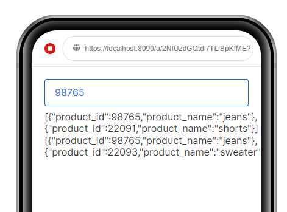

Jake_Hanson
An archive of community.airkit.com as of Monday April 10, 2023.
How do I iterate over a list with sub-lists?
{kind=link}
{kind=link}

AirkitJeremy
Hi, Jake,
This is pretty easy to do with a transform step in a data flow. You could also use this directly in a Set Variable action.
Assumptions:
-
datais the data you want to filter (your first screenshot above) -
product_idis the numeric ID of the product you want to find in the lists
FROM
list
IN
data
WHERE
LENGTH(
FROM
list2
IN
list
WHERE
list2.product_id = product_id
SELECT
list2
)
> 0
SELECT
list
This works by checking each inner list to see if any of the products match the one you’re looking for by product_id. If the count is greater than zero, we have a match, so it will return the parent list. Here’s a screenshot of this in action using the sample data you provided:

zacharyc
@AirkitJeremy answer is great. Love it.
There are a couple of other ways to do this. We had worked on this:
FROM
i
IN
input
WHERE
ISNOTEMPTY(i[?(@.product_id = 98765)])
SELECT
i
This approach uses the JSON Path part of Airscript to solve this.
Also, instead of using length and compaire, you just use the function ISNOTEMPTY to do the same thing @AirkitJeremy is showing above:
FROM
i
IN
input
WHERE
ISNOTEMPTY(
FROM
item
IN
i
WHERE
item.product_id = 98765
)
SELECT
i

joechrz
Building on Zach’s approach with JSON path, if you want to keep the expression as concise as possible, you can even nest this syntax to create a one-liner:
data[?(ISNOTEMPTY(@[?(@.product_id = 98765)]))]

juanchax
hey @Jake_Hanson !
Adding to what the guys already shared, you can also build a UDF if you find that you need to perform the same operation time and again in your app.
Check out the following post: UDFs - Recursive list processing